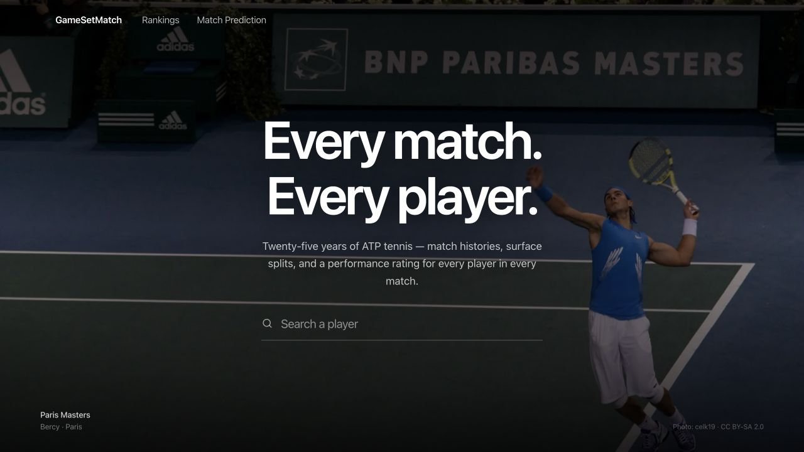
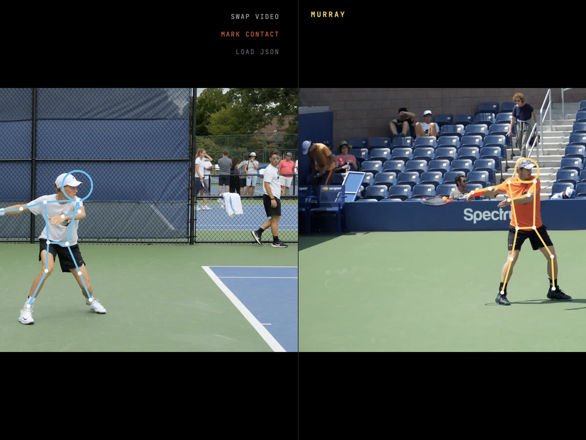
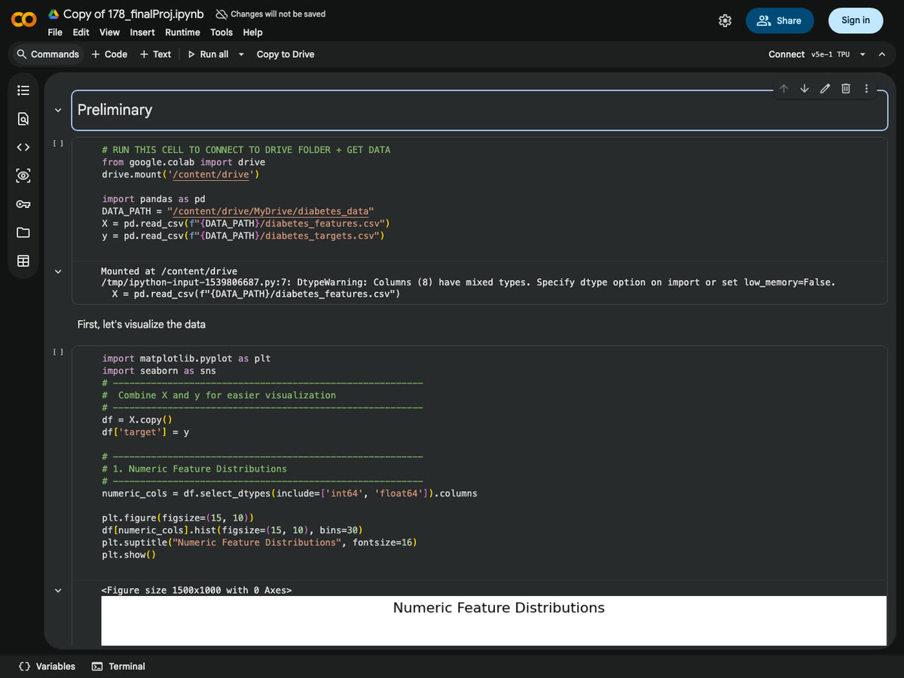
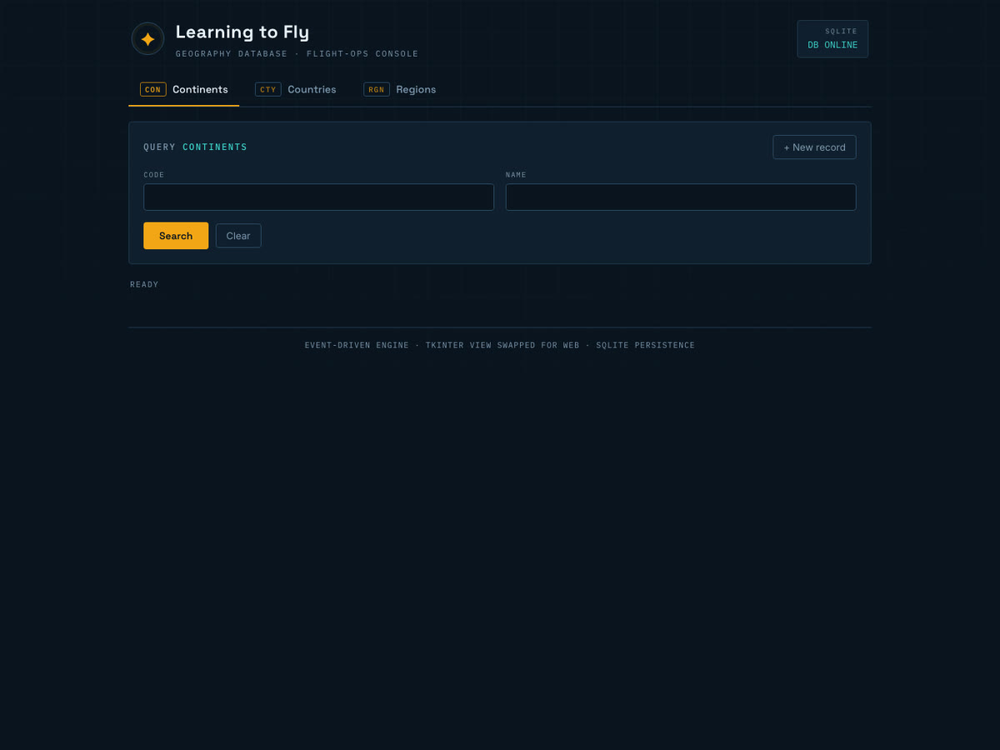

Projects
-

GameSetMatch
A tennis match history web app built with TypeScript on Postgres, with a Next.js and React front end. A Python ETL pipeline ingests 80K+ matches from a public archive into the Postgres database, feeding a Scikit-Learn performance-rating model and a surface-aware Elo match predictor validated at 70% accuracy.
- TypeScript
- React
- Postgres
- Next.js
- Python
- Scikit-Learn
-

Tennis Stroke Comparison
A tool that extracts 33-keypoint pose skeletons from tennis video using MediaPipe Pose Landmarker, then renders frame-accurate skeleton overlays on the raw footage with HTML5 Canvas so two strokes can be compared side by side.
- Python
- MediaPipe
- OpenCV
- JavaScript
- HTML5 Canvas
-

Diabetes Patient Readmission Predictor
Trained and evaluated a range of Scikit-Learn classification algorithms to predict patient readmission, using hyperparameter tuning and adjusted decision thresholds to handle severe class imbalance. The tuned model correctly identified 80% of at-risk patients that the baseline missed.
- Python
- Pandas
- Scikit-Learn
- Matplotlib
-

SQL Airport Database
An event-driven Python backend engine bridging a tkinter GUI with an SQLite database, using parameterised SQL queries to perform CRUD operations across multiple relational tables.
- Python
- SQL
- SQLite
- tkinter
Experience
-
Mar 2026 — Present
Undergraduate Researcher
University of California, Irvine
Building a molecular dynamics pipeline in Python using MACE machine-learned potentials to map energy landscapes. Integrating force algorithms with generated potential energy surfaces to accelerate sampling of ligand–protein binding, and validating simulation accuracy on organic molecules as a testbed toward computational drug-design applications.
-
Nov 2025 — Feb 2026
Undergraduate Learning Assistant, ICS 33
University of California, Irvine
Supported TAs in labs for Intermediate Programming, helping students with assignments and projects on advanced Python mechanics. Assisted in weekly lectures of 200+ students with individualised support, and answered questions on the course discussion boards.